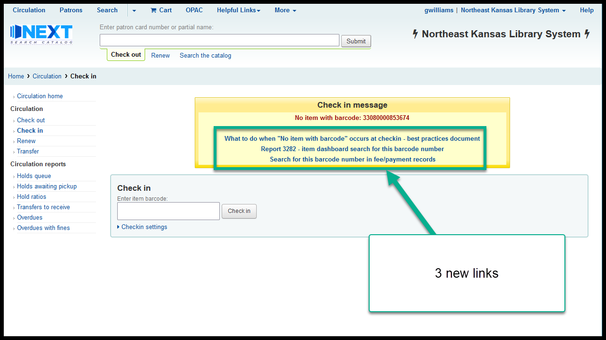

No item with barcode - best practices¶
- Scan the item again to make sure that the barcode really isn’t in the catalog and it wasn’t just a miss-read by the scanner
- Run report 3282 to determine see if the item was deleted in the last 13 months
- Run report 3009 to determine if this barcode number has been recorded in the “Description” or the “Notes” fields of a borrower’s fee/payment record
- If the item cannot be found by any of these methods,
- If the item belongs to your library, follow your library’s procedure for finding a “No item with barcode” book
- If the item belongs to another library, send the item to its owning library
- If you cannot determine which library owns the item, follow your library’s procedures for donated items
Easy access to resources¶
To make steps 1, 2, and 3 easier to accomplish, links have been added to the “No item with barcode” message to link to this document, report 3282, and report 3009

Report 3282 details¶
Report 3282 is the “Item dashboard report.” This report can look up data on an item that’s in the catalog or that has been deleted within the previous 13 months.
Additionally if the item is still in the catalog this report will link to other reports regarding:
- Current borrower (if checked out)
- Bibliographic record
- Item record
- Circulation history
- Action log history (previous 90 days)
- In transit history
- Title’s request history
- Item’s request history
- Notes and descriptions in payment/fee history (if the barcode number was recorded in the notes or description fields)
Report 3009 details¶
Report 3009 can search for barcode numbers in the notes and description fields of payment/fee records. Koha used to automatically put an item’s title and barcode number into the description field in a borrower’s fee record when an item was deleted. Koha developers, in order to make Koha easier to translate into other languages, moved barcode data into a linked field. A practical side-effect of this is that, if an item is deleted while it still has unpaid fees, the link is broken and the item data (including the barcode number) is removed from the fee history.
In order to solve this problem, kona-US and SEKLS have hired ByWater Solutions to write a patch for Koha that will allow libraries to configure what data is put in the fee description field whenever a fee is created automatically so that the data will persist even if the item is deleted (see https://bugs.koha-community.org/bugzilla3/show_bug.cgi?id=24865 for more details).